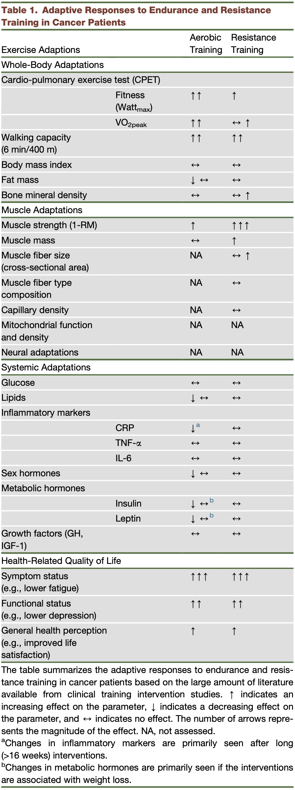
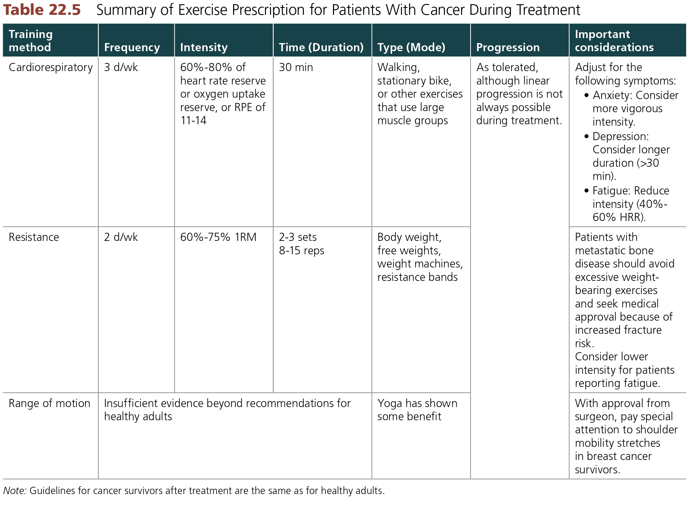

Pre-Lab Activity
Read chapter 22 of the textbook which relates to the topic of cancer.
Complete the Pre-Lab Quiz on cancer in your Canvas Modules.
If you are using the online lab manual, when you have completed the lab content and discussion questions for this week, print this webpage to PDF to save a copy on your device
All text entry boxes will clear if you leave or refresh this page
Lab Session
Introduction
Cancer is a rather unique disease in that it can develop in any organ system, spread to other organs, and has several potential causes. It can affect anyone, regardless of age, ethnicity, or sex. Half of all Australian men and women will be diagnosed with cancer at some point in their life. The direct health system costs of cancer in Australia is more than $4.5 billion. The indirect costs, including the psychosocial and emotional stress it can cause is difficult to quantify.
The most common cancers in Australia are prostate, colorectal (bowel), breast, melanoma (skin), and lung cancer, accounting for >60% of all diagnoses. The main carcinogenic factors are: environment (including behaviour), genetics, oncogenes, hormones, and impaired immune system function. Cancers typically form when one or more of these factors are present.
Most of us have either experienced, or know someone close who has experienced, cancer in their lifetime. Untreated, cancers are typically fatal. But, there are treatments available for many forms of cancer, with many more being developed. Exercise can play a therapeutic role for cancer patients, and there is a growing body of clinical research on the benefits of exercise to counteract the negative effects of cancer and play an important role in its prevention, treatment, and survivorship.
The objectives of this lab are to:
Examine the pathophysiology of cancer and its effects on patients’ health and well-being
Explore the role of exercise in the prevention and treatment of cancer
Develop an understanding of exercise prescription considerations in cancer care settings
Impacts of Exercise in Cancer Care
The following figure and table from the Hojman et al. (2018) article present an overview of known impacts and effectiveness of exercise in the prevention, treatment, and survivorship of cancer.


Exercise Testing for Cancer Patients

Exercise Prescription Guidelines

The above table provides general guidelines for patients undergoing cancer treatment. However, all cancers are unique, so please refer to specific guidelines for the cancer being treated prior to developing exercise programs.
Activity - Case Studies
In small groups, develop an Exercise Management Plan for each for the following Case Study patients.
Case Study 1
Samara is a 47-year old female with breast cancer.
Samara is 10 weeks post surgery (double mastectomy), and is completing her first cycle of chemotherapy. She will then commence radiation therapy and hormone therapy.
Consider the following:
| Objectives/goals of the exercise program for this patient | |
| General health considerations | |
| Health implications of surgery, chemotherapy, radiotherapy | |
| Breast cancer-specific health considerations | |
| Medical assessments prior to exercise |
Case Study 2
Dev is a 28-year old male with colon cancer.
Dev is 12 weeks post surgery (ostomy), and is undergoing both chemotherapy and radiotherapy.
Consider the following:
| Objectives/goals of the exercise program for this patient | |
| General health considerations | |
| Health implications of surgery, chemotherapy, radiotherapy | |
| Breast cancer-specific health considerations | |
| Medical assessments prior to exercise |
Case Study 3
Meriva is a 73-year old female with bone cancer
Meriva is currently undergoing chemotherapy and radiotherapy.
Consider the following:
| Objectives/goals of the exercise program for this patient | |
| General health considerations | |
| Health implications of surgery, chemotherapy, radiotherapy | |
| Breast cancer-specific health considerations | |
| Medical assessments prior to exercise |
Discussion
Throughout the lab we will be viewing and discussing content related to the prevention and treatment of cancer. You can write any notes related to the content, discussions, and case study activities below.
If you are using the online lab manual, when you have completed the lab content and discussion questions for this week, print this webpage to PDF to save a copy on your device
All text entry boxes will clear if you leave or refresh this page